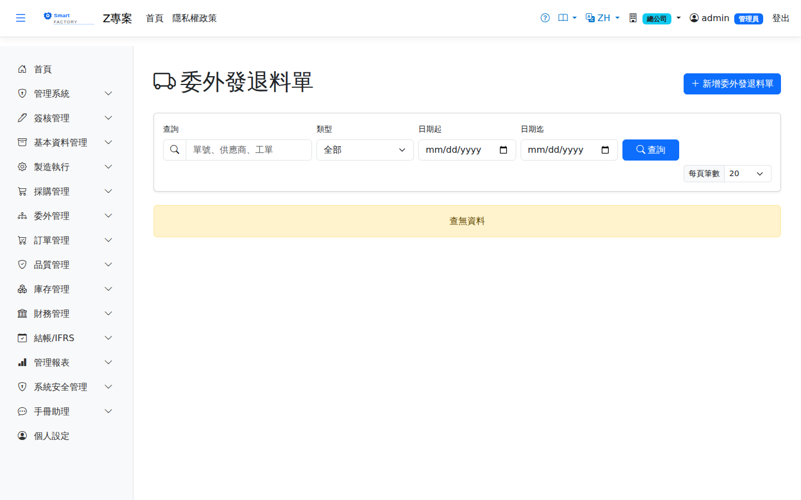

委外發退料單Outsource Material
路由：/OutsourceMaterial | 委外加工發料（OO）與退料（OR）Route: /OutsourceMaterial | Outsource material issue (OO) and return (OR)
依委外採購單發出原料（OO：原料 → 在途委外），加工廠退回未用料以 OR 沖回。發料出庫的單位成本即發料時點 AVCO 快照，作為委外成品結轉成本與超耗計價基礎。Issues raw material against an outsource PO (OO: raw material → in-transit outsourcing); material the subcontractor sends back is reversed with an OR. The unit cost of the issue is the AVCO snapshot at that moment, which becomes the carry-over cost of the finished part and the basis for pricing excess consumption.

委外發退料單畫面截圖（示意，實際欄位/資料依權限與查詢條件而異）Outsource material screenshot (illustrative; actual fields and data vary by permission and query criteria)
查詢Search
1
查詢列輸入條件後點「查詢」；欄位標題可點擊排序，清單下方有分頁導航。Enter your criteria on the query bar and click "Search"; column headers can be clicked to sort, and the paging controls sit below the list.
單據狀態Status
| 狀態Status | 說明Guide |
|---|---|
| 草稿 DraftDraft | 已建立未生效，可自由編輯、刪除；需簽核者於此狀態送審。Created but not yet effective; can be freely edited or deleted, and submitted for approval from this status. |
| 待審核Pending approval | 已送審等待簽核，不可編輯；可撤回改回草稿。Submitted and waiting for approval; it cannot be edited, but it can be withdrawn back to draft. |
| 已確認 ConfirmedConfirmed | 簽核核准（或免簽核直接確認）後生效，等待後續作業/過帳。Effective once approved (or confirmed directly when no approval is required), waiting for the next step or for posting. |
| 已過帳 PostedPosted | 庫存/帳務已入帳，單據不可再修改。Stock and accounting have been posted; the document can no longer be changed. |
| 已作廢 VoidVoid | 反向沖銷已過帳內容；作廢原因需留存，不可復原。Reverses what was posted; the void reason is kept and the action cannot be undone. |
作業流程Process
建立發/退料單Creating an issue or return document
1
點「新增」開啟側欄，填寫發/退料單表頭與明細行後儲存（草稿）。表頭可選填「委外採購單」與「委外派工」建立 MFG 連結：發料（OO）指定派工時，系統驗證各品號累計發料量不得超過派工發料需求量（扣除其他未作廢發料單已發量）；委外採購單供應商須與本單供應商一致。Click "Add" to open the panel, fill in the issue/return header and lines, then save (as a draft). The header can reference an outsource PO and an outsource dispatch to link back to MFG: when an issue (OO) names a dispatch, the system checks that the cumulative issued quantity per product does not exceed the dispatch requirement (less what other non-voided issues have already sent), and the outsource PO supplier must match the supplier on this document.
2
點「送審」進入簽核流程；核准後單據自動轉「已確認」。若免簽核，直接點「確認」。Click "Submit" to start the approval flow; the document turns to "Confirmed" once approved. Where no approval is required, click "Confirm" directly.
後續作業Follow-up actions
1
已確認/已過帳單據可點「列印」產生含 QR Code 的正式表單（新分頁開啟）。Confirmed and posted documents can be printed with "Print", producing the official form with a QR code in a new tab.
2
已過帳單據如需沖銷，點「作廢」並填寫原因；系統產生反向庫存/帳務異動。To reverse a posted document, click "Void" and enter a reason; the system creates the reversing stock and accounting entries.
委外退料（廠商把料退回）的入庫成本，由系統以這張工單此料「還在廠商那裡」的加權平均自動帶入（已發出的價值扣掉已退回的價值），不是現在的庫存單價；先進先出的料也因此可以正常退回。A return from the subcontractor is valued automatically at the weighted average of what is still out at the subcontractor for this work order and item (value issued less value already returned), not at today's stock cost — which is also what lets FIFO items be returned at all.
欄位說明Field reference
表頭Header
| 欄位Field | 說明Guide |
|---|---|
| 委外發退料單號Slip No | 系統採番，不可修改Numbered by the system; not editable |
| 類型Type | 必填Required OO 委外發料（送料到廠商）／OR 委外退料（廠商退回用料）OO outsource issue (material sent to the subcontractor) / OR outsource return (material sent back) |
| 發料日期Issue date | 必填Required 料件送出或退回的日期Date the material was sent out or returned |
| 委外廠商Subcontractor | 必填Required 收料的委外加工廠商Subcontractor the goods are received from |
| 工單Work order | 本次送料服務的工單Work order this material shipment serves |
| 委外採購單Outsource purchase order | 對應的委外採購單，用於串接加工費與超耗結算The outsource PO it belongs to, linking the processing fee and the excess-consumption settlement |
| 派工單Dispatch | 對應的派工單工序The dispatch operation it belongs to |
| 備註Notes | 整張單據的補充說明Notes for the whole document |
明細Lines
| 欄位Field | 說明Guide |
|---|---|
| 品號Item | 必填Required 送出或退回的料件Item sent out or returned |
| 來源單號Source doc No | 產生此需求的來源單據；由來源單匯入時自動填寫，用於追溯與回寫Source document that raised this demand; filled in automatically when imported from the source, and used for tracing and write-back |
| 數量 / 單位Qty / UOM | 必填Required 送出或退回的數量。選了品號後，單位只列該品號的庫存單位與查得到換算的單位（預設庫存單位）；存檔時系統依品號主檔換算成庫存數量入帳，查不到換算的單位會擋下並說明。Quantity sent out or returned. Once a product is chosen, the unit list shows only its stock unit and the units that convert to it (stock unit preselected); on save the system converts to the stock quantity from the product master, and a unit with no conversion is rejected with an explanation. |
| 單價Unit Price | 發料時凍結的 AVCO 單位成本；委外超耗扣款即以此單價計價AVCO unit cost frozen at the moment of issue; the outsource scrap penalty is priced with it |
| 已作業量Put Away | 倉庫作業實際執行（上架或下架）的累計數量；全部執行完畢後單據自動過帳Cumulative quantity actually processed by warehouse operations (put-away or picking); the document posts automatically once everything is done |
| 備註Notes | 該明細行的個別說明Notes for this individual line |
相關畫面Related screens
委外採購單Outsource purchase order、委外收貨Outsource receipt、委外重工單Outsource Rework